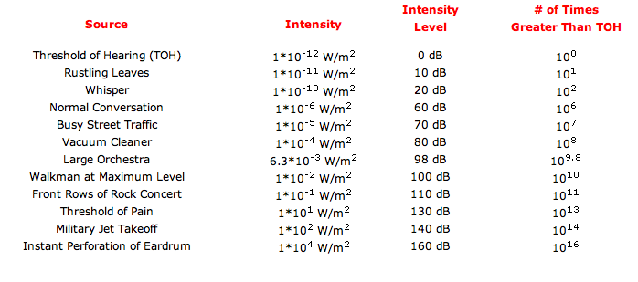

Waves - Sound
We hear sound when pressure variations at the eardrum cause it to vibrate.
Pressure waves in the frequency range that we can hear are called sound. Humans can hear as low as 20 Hz and as high as 20,000 Hz. Lower than 20 Hz is called infrasonic, while higher than 20,000 Hz is called ultrasonic. It should be noted that the upper frequency limit decreases with age. There are tiny "hair cells" in your inner ear that are the 'receptors' for these frequencies. If you damage these hair cells or if they become brittle and damaged due to age, you can no longer hear those frequencies.
QUESTION: What are some causes of hearing damage? Discuss your answers with your neighbor.
If you'd like to informally test your hearing, grab a set of headphones and go to this website.
Loudness
Loudness is determined primarily by the amplitude of the sound wave: the larger the amplitude, the louder the sound. Equal-amplitude sound waves of different frequencies will not have the same perceived loudness to humans.To measure the loudness of a sound, we measure the intensity: the power (energy/time) per unit area. Because of the wide variation in the range of sound intensities, a quantity called intensity level is commonly used to compare the intensity of one sound to the intensity of a reference sound. Intensity level is defined on a base 10 logarithmic scale as follows:
Sound Level is measured in decibels (dB).

QUESTION: Can you figure out the intensity of something at 35 dB?
Remember, a 40 dB sound has 10 times the intensity of a 30 dB sound, which is 10 times the intensity of a 20 dB sound. This means compared to normal conversation, a rock concert is sometimes between 100,000 and 1,000,000 times the intensity greater!
Pitch is the perception of the frequency of a sound. Tuning forks of different sizes produce sounds of approximately the same intensity, but we hear each as having a different pitch. The shorter the length of the tuning fork, the higher the frequency and the higher the pitch. Like loudness, pitch is not a physical quantity but rather a subjective impression.
High Frequency = High Pitch
Low Frequency = Low Pitch
Sound can travel through any kind of matter, but not through a vacuum (it needs a medium because it is a mechanical wave). The speed of sound is different in different materials. The speed is generally fastest in solids, then liquids, then gases. The speed depends somewhat on temperature, especially when involving gases.
Standing Sound Waves and Harmonics
Sound waves, which are longitudinal waves, can also produce standing waves. Lets think about wind instruments, such as a flute where wind is passing into a tube. While the complexity of this is high (go here back to Penn State for more info), we only need to understand that there is pressure affecting the medium in the tube. Watch the animation below and compare the three sections. The compression wave causes both a displacement of air particles as well as a pressure wave.
We care about this because we can manipulate the longitudinal wave to make music and sound! We can use the following equations depending on if the tube is open or closed at one end (the other end always has to be open to allow the air to escape).
Notice how the pressure and the displacement nodes and antinodes are opposites from each other.
So why does a trumpet sound different from a flute? The answer lies in overtones – which ones are present, and how strong they are, makes a big difference. An overtone is any frequency higher than the fundamental frequency of a sound. The image below shows frequency spectra for a clarinet, a piano, and a violin. The differences in overtone strength are apparent.
Beats and Beat Frequency
When two sound waves overlap, they interfere. The alternating constructive and destructive interference causes a beat.

To solve for the beat frequency, how often the two waves will interfere, you just subtract the two frequencies (absolute value).
Example 1: A 440 Hz frequency overlaps with a 380 Hz frequency. What will be the beat frequency? Answer: 60 Hz.
Example 2: What other frequency will interact with the 440 Hz frequency to cause a beat frequency of 60 Hz? Answer: 500 Hz.
The Doppler Effect
The last topic that we need to discuss for sound is the doppler effect. The idea here is that an object that is not the source of the sound MAY have some perceived pitch difference than the actual pitch or frequency coming out of the source object. The reason that there might be a perception difference is because of relative velocity difference between the two objects.
Think about an ambulance or fire truck siren. Do you think there is a man inside who switches the sound as it passes you by? Of course not, its the same constant sound from the siren, but if you are in front of the moving truck the sound waves are "pushed" towards you because of the velocity of the truck. Since the wave fronts are being pushed toward you by the speed of the truck, they hit you at a higher frequency than if the truck was sitting still and certainly more frequent than if the truck (and sound) was going away from you. What if the truck was sitting still and you were headed towards the truck? The same relationship would exist. It would even be greater if both you AND the truck were headed towards each other. Therefore, we can write the following equation that has certain conditions, depending on the motion of the observer and the motion of the source.
Some more ../../images that might help you understand: